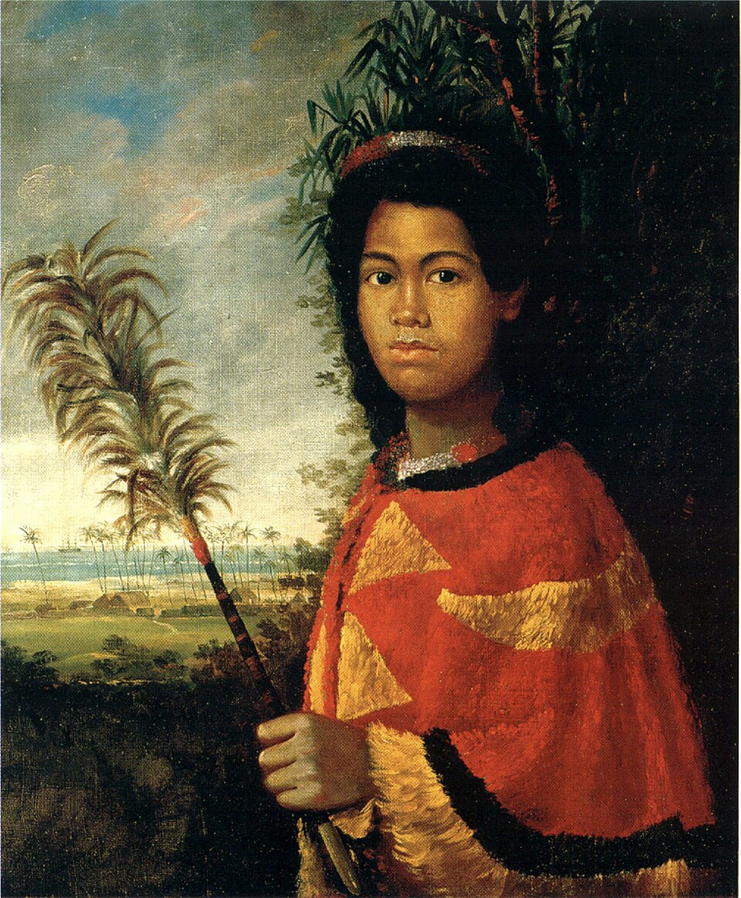

Princess Nāhiʻenaʻena Elementary School
Place: Princess Nāhiʻenaʻena Elementary School, Lahaina, Maui
Type: Public elementary school / commemorative place name
Namesake: Princess Nāhiʻenaʻena, daughter of Kamehameha I and Keōpūolani and sister of Kamehameha II and III
Story it tells: How a modern Lahaina school honors a high-ranking Hawaiian princess whose life reflected the cultural and religious transformations of the early Hawaiian Kingdom, and whose legacy remains closely tied to Lahaina and Mokuʻula.

Princess Nāhiʻenaʻena Elementary School in Lahaina is named for one of the highest-ranking princesses of the early Hawaiian Kingdom. Born around 1815, Nāhiʻenaʻena was the daughter of Kamehameha I and Keōpūolani and sister of Kamehameha II and Kamehameha III. Through her mother, she inherited an exceptionally sacred chiefly lineage. Much of her life unfolded in Lahaina, where the Hawaiian Kingdom was undergoing profound changes as traditional chiefly customs conflicted with the growing influence of Christianity and Western education.
Nāhiʻenaʻena became a central figure in the tensions between these two worlds. Her relationship with her brother, Kamehameha III, reflected traditional practices among the highest-ranking aliʻi to preserve the bloodline. This practice, however, conflicted with the teachings of Christian missionaries, with whom she had developed close relationships following her mother's death. Following the tragic death of her infant son in 1836, Nāhiʻenaʻena died later that year at approximately 21 years old. Her remains were placed at Mokuʻula, the sacred island within the Mokuhinia fishpond that became an important royal residence of Kamehameha III. Her remains (along with her mother's) were later transferred to Waiola Church Cemetery, where her connection to Lahaina is still remembered.
The school sits in the hills above Lahaina, within a landscape once dominated by the sugarcane fields of Pioneer Mill Company. For much of the nineteenth and twentieth centuries, plantation agriculture transformed the slopes between Lahainaluna and the coastal town below. As West Maui's population grew and the plantation era declined, former agricultural lands were gradually converted into residential neighborhoods and public facilities. Princess Nāhiʻenaʻena Elementary School opened in 1988 in these former fields, carrying the name of a princess whose life had been closely connected to Lahaina more than 150 years earlier.
The school became an important part of West Maui's educational community, offering a Hawaiian language immersion program alongside its regular elementary curriculum. The devastating Lahaina wildfires of August 8, 2023, forever changed the town and its residents. Although the school itself avoided the destruction, nearby King Kamehameha III Elementary School was consumed in the blazes, displacing hundreds of students and families. Princess Nāhiʻenaʻena Elementary temporarily welcomed students from the destroyed school bearing her brother's name, sharing its campus while the community worked toward recovery. In a town where so much of the historic landscape was lost, the school continued to serve as a place of learning, stability, and connection. Its name also preserved a tangible link to Lahaina's royal past, a history that survived even as many of the places associated with it were destroyed.
Today, Princess Nāhiʻenaʻena Elementary School connects modern Lahaina to the era when the town stood at the center of the Hawaiian Kingdom. Its name honors a young princess whose life reflected one of Hawaiʻi's great periods of cultural transformation, while the school itself has become part of Lahaina's continuing story of community, resilience, and renewal.